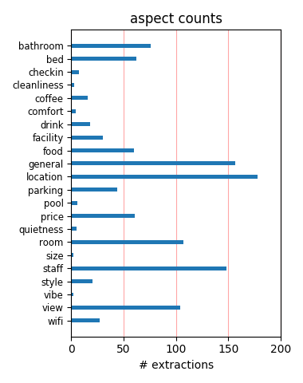
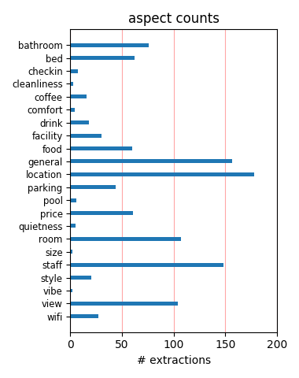

We really liked it!! We really enjoyed Le Meridien - friendly staff, very nice room (great bathtub and bed) very good location, nice view. It was really one of the best hotels I've ever stayed in. Highly recommended. We got it through priceline for $115 + tax.
My visit I had a great stay in the Hotel. The staff of this hotel is the tops and very friendly. I would recomend this hotel highly. I stayed on the 24th floor and the views were outstanding. Also the food in the hotel is second to none from the breakfast to dinner. I will be back soon.
Very nice stay I had stayed here when it was a Park Hyatt and it still is a great place to stay in SFO. We had a studio suite with a separate living room separated by an awkwardly placed tv credenza. Clean, sophisticated, and a good deal as well. Will return on the next trip to San Francisco.
Great Hotel - Get what you pay for A very nice hotel. Clean, QUIET, high quality, nice service, great location, beautiful room...Don't forget how expensive parking is all around San Francisco. $50 a day at this hotel with full valet.No perks here. Just straightforward - expensive but excellent.
nice hotel good location great concierge Hotel rooms are nice, but typical. The concierge desk is really fantastic. Always very friendly with great local advise. The resturant is the lobby bar - not special and the breakfast is slow and very expensive. Eat elsewhere and you will really enjoy your stay!
Terrific experience Wow, what a great hotel. The rooms are spacious and clean with marble countertops in the bathroom and a very comfortable bed. This used to be a Park Hyatt hotel, and the amenties are fantastic. Skip the valet parking and park at the Embarcadero Center across the street. It's much cheaper.
Loved this Hotel!!! We really enjoyed this hotel! It was very clean, very friendly, and we loved the location. It was quiet at night, which is important to us that don't regularly live in a city! The rooms were very clean and all the staff were very helpful. The concierge staff were incredibly helpful and fun. This hotel is a great find!!
I loved this hotel I have stayed in Le Meridien chain a lot and have never been disappointed. This one was no exception. It has beautiful rooms, marshmallow-like comfortable beds and marble bathrooms. The staff were also very professional, courteous and friendly. It is conveniently located near the Embarcadero Center, but not very well-known to taxi drivers.
Solid/A- My fiancee and I stayed at the Meridien over July 4th weekend. Excellent room at a reasonable price. Clean, spacious, great concierge! The gym was wonderful and the staff friendly. We even enjoyed the little hotel bar, where the staff were personable and interesting. Excellent location. So-so bathrooms. Fine views. A fine hotel for business, vacation, or first-timers to SF.
Fantastic hotel We stayed in this hotel for three nights over independance weekend, we had a corner room which was fantastic, the bathroom was huge, complementary internet in available, staff were very friendly and helpful, the hotel is in a good location, easy to catch the cable cars and about 15 minutes walk to the piers. This is a hotel we would recommend to any visitors to san Francisco.
Nicely remodeled, a bit overpriced The Le Meridian located is located in the financial district of San Francisco, and has recently undergone a major renovation. Rooms are nicely appointed, staff is friendly and efficient, and I'd recommend it to anyone wanting to stay near the Embarcadero or Market Street. Rates are a bit high ($250+ per night) but that seems to be the going rate for the downtown area.
Wanted for nothing at this fine hotel If staying in the financial district of San Francisco, I cannot recommed Le Meridien enough. The rooms are all newly renovated, with tasteful furnishings. Service was absolutely exemplary. The in-room dining was excellent (I only ordered breakfast) although quite expensive. The room was reasonably priced for this part of SF, and if you appreciate fine service and attention to detail, this is your hotel.
Really Good Hotel Stayed at Le Meridien this week on a business trip and I was very impressed. Check in was quick, room on the 17th floor was large, clean, modern with a wonderful view. The bathroom was quite large and the bed was a king. I'd stay there again in a heartbeat. Plenty of power outlets and internet connection was easy. Location was quite favorable as well. Found the staff to be very friendly and they served free, good coffee in the lobby!
Terrific Stayed here for 7 days from the labor day w/end. This was my first visit to San Francisco and really did not know what to expect, there were so many hotels to chose from. What a bonus to have picked Le Meridien. Had a room on the 21st floor with a lovely view, but the best thing of all that it was Quiet- quiet - quiet. Our room was opposite the lift but honestly did not hear a single thing outside of the room for the entire seven days. Remarkable!!
Very, very nice hotel This is a truly excellent property. I only stayed for one night on business. When I checked in I got upgraded to a studio suite, which was a very large room with a seating area and an excellent view of the Bay Bridge. The bathroom was huge and had a seperate tub and shower. The concierge recommended an outstanding restaurant for dinner (Rubicon) and was very helpful for a couple of other questions I had. No doubts that I would stay here again.
Fantastic Hotel My fiance and I stayed here for 4 nights in January. This is a great hotel. We had a room on the 21st floor, overlooking the bay and the bridge, with floor to celing windows. The bed was very comfortable, although not as comfortable as the one at the W and Westin Hotels. This being a Starwood Hotel I expected it to be the same. The service was top notch, comparable to what you would experience at a Ritz Carlton or Four Seasons. Overall a fantastic stay.
Class Act This is a very nice hotel. The front desk and concierge were very friendly and helpful. The room was nice with an bay view. I really liked the bed with the down pillows and bathroom. The location was within walking distance to the Ferry building and North Beach. We got the room on Priceline and paid around $180 a night. It was more than we like to pay, but the town was sold out. I would stay here again. I thought this was one of the better hotels in San Francisco.
Great stay, great hotel My girlfriend and I just spent the weekend at the Le Meridien and had a great time. From the initial contact at check in, to departure the next day, the staff was very helpful. We had a room on the north side, 18th floor. The view from the room made it had to go out for dinner. We will be back, as this was one of the best hotel experience we've had in the CIty. Be sure to make dinner reservations in the area early since the restaurants around the hotel were busy and the grill at the hotel was expensive.
Great Hotel We stayed at the Le Meridien for three days this past July (2008) and could not have been happier with our stay. I booked the hotel through Priceline at half the published rate. The room was spacious, the bedding very comfortable, and the room nicely furnished and very clean. Staff were polite and helpful. In fact, the front desk employee upgraded our room upon check-in to one that would be more spacious than the one originally assigned to us. Great location in the Financial District. I would definitely stay at this hotel again.
Pricey, but worth it! This hotel used to be the Hyatt on Battery and was recently purchased by Le Meridien. I have stayed at the hotel several times and love it. The bed linens are luxurious, the rooms are always clean, and the views are great. I think that the price is a tad high, but the quality of the gym, rooms, and location makes it worth every penny. Best hotel gym that I have seen in an SF hotel. This hotel is central to the Financial district which makes it perfect for business trips. This is my first choice for all business trips in SF.
Great location We stayed at the Le Meridien right after they took over from the Park Hyatt so things were still a bit chaotic-everything still said Hyatt. Despite that the service was great, the room was luxurious and we had a great time. The rooms are slightly masculine in feel. The room service was particularly good. The location is great right near the Embarcadero with the ferry building and all the shops. Very easy to walk to restaurants, even to walk to North Beach. This hotel is very quiet and convenient. We will definitely stay there again.
High priced but delivers (mostly) Great room, great (though narrow) view of bay Ferry Bldg, easy access to Saturday morning farmers market, and an amazing array of fresh stuff. The place is expensive, but for the location, view, and service -- worth the splurge. Parking is a rip at $49 (tax included). Didn't check the fitness facilities: who cares when you're splurging? Get your exercise walking to City Lights bookstore, Brandy Ho's Chinese food, or along the Embarcedero after glutting at Cowgirl Creamery and the bread shops inside the Ferry Bldg.
Great business hotel in SF I stayed in this hotel numerous times when it was the Park Hyatt, in the summer of 2005, while I was on a consulting project. I loved it - understated, quiet, great service, friendly staff and convenient location made it a perfect base. I returned again and again. Hopefully the staff and style have not changed with new ownership. The views from the north facing, upper floors are wonderful on summer mornings. If you like morning exercise, the fitness room is good and the location allows morning runs along the Embarcardero.
Lovely hotel in San Francisco I stayed on business at Le Meridien this month. It is conveniently located for business and pleasure. My room had sliding glass doors that opened (an increasing rarity) and a view of the bay. the fitness room was well equipped and clean.I ordered room service for breakfast - service was great and the coffee was piping hot.The best part of my stay was the luxurious bed, comforter and sound soother. I had one of the best nights of sleep in a hotel room at Le Meridien!Needless to say, I'll be back the next time I'm in SF.
Highly recommended Not a place I usually stay in SF but the price was right so I took a chance and boy was I surprised! The entire family loved the hotel, everyone went out of their way to help with the slightest request and the location was perfect for walking to Chinatown or even Union Square (a nice 10 minute walk). Rooms were large and the bed very comfortable. Bathrooms were all done in marble and very nice, only thing I wished for was a larger tub to soak in after walking all day!Really enjoyed it and will be staying there on our next trip to SF.
Nice hotel, wonderful views at the top floors I stayed three nights at Le Meridien San Francisco in August. The room was beautiful, wide and with a grat bed. The staff was very nice and helpful. They gave me a room on the 22nd floor, with a nice view over the downtown and the bay.The hotel is located in the downtown, near Jackson. Nice place to stay with lot of restaurants around and just a few blocks walking from Chinatown. Just one objection: the parking was veryexpensive (49$ per night). Anyway, you have a public parking in the next building with a 28$ daily price.
Hotel restaurant always closed for dinner This is a great hotel, but I have to say that closing the hotel restaurant for dinner each night substantially reduces the value of this hotel, in my view. I don't feel like walking around the city's financial district with business associates trying to find a quiet restaurant after a long and tedious working day. I was told by the hotel staff that I could eat in the bar, but who in the heck wants to have a nice meal in the bar? At a hotel of this caliber and price, I would expect full service. It is not, and I will not go back.
expedia price couldn't be beat We got an amazing rate at Le Meridien -- about $160 per night, which is unbelievable for San Francisco. When I checked in with two teenagers, the kind woman at the front desk said, I bet they'd like a view... and promptly put us in a room with a bay view on the 24th floor. Everything was perfectly clean, the view was amazing. The concierge was friendly, knowledgable and helpful. I would call this a great business hotel. I'm not sure I'd agree that it's a five-star hotel, as some ads claim, but it's a solid four-star stay in a great location.
Loved it Stayed Friday to Sunday in a studio suite here. The rooms are recently renovated, they need new pictures on the web to show this. It was a fantastic stay and I found great restaurants and nightlife within easy walking distance. The bed was the best ever, everything was top notch. My room had a tiny balcony, really just a ledge, but the door opened fully for fresh air. I did not dine in the hotel, but have no doubt it would have been excellent too. Staff was friendly and great. Hotel is pricey, but has great weekend rates. Go stay here, you will not be disappointed.
Great Location, A Little Pricey, Clean We usually stay at the Argent, but it was booked so we cashed in some points and stayed here. I thought I liked the location of the Argent, but in retrospect, this is an even better location.The mall is right next door + the BART is within a 5 minute walk. It's a great location - minutes from the Embarcadero - and on the weekend, we walked over and did some shopping at the farmers market.The rooms are clean and being the heart of the financial district, the sidewalk traffic really clears out after 6pm and on weekends.Would highly recommend it!
Great location, very comfy hotel The beds are extra comfy and fluffy, the bathrooms are decked out in marble. It's a very cushy place in the middle of the business district. We had a great view and enjoyed opening up our sliding door to get a San Fran breeze. The bar is fun downstairs and bartenders very nice to chat with. Ended up chatting with the nicest couple from England at the bar. The concierge was excellent and pointed us in the right direction every time. It's a short walk through the Embarcadero buildings (with lots of shopping to distract you) to the Piers and cable car line.
Great friendly service I stayed at Le Meridien for an outside meeting .It was an easy walk to the Ferry building. I loved the rooms .The extended hour concierges were extremely helpful.I had gone to St Regis (too much attitude) to check it out for a drink and I greatly prefer the service at the bar at Le Meridien .The service at the Le Meridien bar was great ,professional yet friendly.I realy enjoyed the view from my room of the bay bridge .My only comment is that the CD player in my room was glued to the counter and too high for me to read the dials . I will stay there again with my I pod
If you find a good price you need to saty here My husband and I went on a short trip to San Fran. I wanted to stay downtown and found a really good deal on hotels.com This hotel was the nicest hotel I have stayed in for a long time. The room was big, we had a great view of the Bay bridge and coit tower. It is in the finial district so pretty quite at night. there were a few bars around and also a movie theater. The hotel does have a town car sercive so we had them drop us off at Fog city dinner and then we just walked back. i woudl not pay the listed price for the room but we got a great room for $170.
Return Visit Did Not Dissapoint This is our second stay at this location and once again, it was wonderful! As an SPG Gold Member, they accomodated my request for an upgrade and treated us like Gold while we were there! From the front desk to the concierge to housekeeping, everyone was extremely polite and made us feel so welcome and well cared for. While I typically like to stay closer to Union Square, the service and ameneties make the Le Meridien worth sacrificing a little more convenient location. Thank you to the staff and keep up the good work! I will only stay here or the St. Regis when in the bay area from now on!
awesome service, gorgeous rooms We stayed at Le Meridien while celebrating an anniversary, and it was a good thing I let the hotel staff know that, because they went all out. After we got back from a nice dinner, we discovered they had left us a free bottle of champagne, chocolate covered strawberries, and a nice card congratulating us on the occasion. They had even turned on music for us. That aside, the room was large, beautiful (I do like modern decor) and had a great view. I especially liked the bathroom and the bath products. The location is more financial district than downtown, but we had a car, so it was fine for us.
Felt like a celebrity! We found a low rate on Travelocity. Contacted Le Meridien directly and got the low rate, plus another 10% off. I mentioned that it was our anniversary and asked for a room on one of the higher floors. We booked a junior suite for $135. When we arrived, we found out that we were upgraded to a full King Suite on the 24th floor. The room also had a jacuzzi tub. The view of the bay was beautiful. (Ths was a $600 room) The concierge knew our name and greeted us by name whenever we entered the lobby. Location is great and you can easily walk to Union Square and the piers. Had a wonderful stay and would love to stay there again.
Fabulous Hotel Beautiful hotel from the moment we walked in! Concierge lady very nice, and helpful. Hallway carpeting smelled new. Our guestroom had 2 double beds, and large sitting area. Gorgeous room, and bathroom. We didn't eat at the hotel. There is a Starbucks across the street, and Embaradero Center also across the street. The Center is comprised of 4 high rise buildings with a continuous walkway through street level, with outdoor entrance stores and eateries. The area is great. About a 30 minute walk to Pier 39, or Union Square. Financial district is kind of dead at night. I wouldn't walk alone. Overall a fabulous weekend stay with my two daughters!
Room For Improvement The only positive thing about this hotel was the bed - big and comfortable. The front desk staff were rather poorly behaved and not particularly helpful. Beware business travellers - if you need a quiet place to stay, this isn't it. The hotel is facing the street and the walls are paper thin, so you can hear your neighbours all the time - walking, talking, singing, etc. The rooms do not include complementary water which is inconvenient to say the least, showers are average, the list goes on. I would have prefered to spend extra $$ and stay at the Ritz which is what I will do next time. This place simply does not warrante $300+ spend on a suite.
It's Okay I stayed at the Le Meridien for 4th of July weekend with my fiance in a Studio Suite. The bed was comfortable and the LG tv was great (the tv did not rotate so we could not view the tv in the living room area). The bathroom was too small and it did not have enough counter space. The bell boys never asked us if we needed help with our bags,they just looked. The conceirge was slow and we waited for over 15 minutes for help. We liked the bartender but the bar was too small and people were standing over us while we enjoyed our drinks. Room service had great food. Overall I wouldn't stay at this hotel again. There were too many small problems that we did not like.
Great rooms, great beds, great time! We stayed at Le Meridien for my wife's birthday and thoroughly enjoyed ourselves. Located close to Jackson Square, Le Meridien is walking distance to Fisherman's Wharf, Union Square and the Ferry Building (great farmer's market on the weekend). The rooms were large and very clean and looked renovated within the last two years with the bed very comfortable. Water pressure was excellent and we had both a bathtub and a shower to choose from in the large bathroom (bay view room of the Bay Bridge). We also enjoyed a great breakfast in the morning in bed. We could not have been happier with our experience and will definitely be back on our next trip to SF.
Rooms just ok, staff needs training I recently stayed at Le Meridien on a business trip. My problem with the hotel was not that it had problems, but that staff members didn't even pretend to care. When someone (from staff) knocked repeatedly on my door at 6:30 in the morning for no reason, there was no apology. When I told them at checkout, there was no apology. When I asked about wireless access in the lobby (which I had already been promised and I had paid for), I was told casually that it didn't work. When I pointed out that I had paid for it and it was a problem, no one seemed to care. Management needs to take a closer look at teaching staff to at least pretend like they care about guests.
In the Middle of the City Le Meridien is a wonderful hotel. The wife and I stayed in a King mini suite, on the 18th floor. The view was spectacular, and because you can actually open the glass door to the outside you can take in some air. We were able to lean out and see much of downtown, including the Bay bridge. The place is first class, and takes care of you. As we were already in the city, we attempted a 12:45 check-in, they were more than willing to accomodate our needs. As others have stated, my only complaint is the $55 valet parking fee (only motel parking fee available). But I am sure my car was very comfortable. If you have the time, walk over to Union center, and eat the Cottage Pie at Foley's pub, excellent.
Great mix of corporate and boutique It's in a great location in downtown San Francisco - about two blocks from the Ferry Terminal Building, and about three blocks from the TransAmerica building.The person who checked us in was very friendly, and although we were on the lowest hotel floor (7), we had great views of the Bay Bridge from a small balcony. We had a small office area with a desk and two chairs, which was great for setting up a laptop. Unfortunately the wireless access isn't free.The decor is modern - more boutique hotel than corporate. The bed was really nice and comfortable. The bathroom was large and the products were nice. There's a large gym in the basement of the hotel. I would definitely stay here again.
Made our stay We stayed here for 2 nights to celebrate our anniversary. The hotel upgraded us to a junior suite on the 23rd floor overlooking the bay. Needless to say, the room was impressive: great bath amenities, nicely appointed suite, and an impeccable service to match. On our last night, the front desk sent up a bottle of champagne and chocolate-dipped strawberries, very toughtful and a nice touch. The hotel was centrally located, walking distance to restaurants, Chinatown, Fisherman's Wharf, etc. Since the hotel is in the business district, parking is expensive. There is also no pool and wireless internet (cable still available). Overall, this is a great property and staff were quick to help with smiles all around.
Awesome weekend stay in SF I was working in Sacramento and had to stay over the weekend, so I went in to SF on Friday night. I booked the Le Meridien over Expedia for an amazing rate. The hotel was insanely busy, but the check-in process was reasonable and they had my room, so I was happy. Upon arriving in my room, I discovered the amazing views they have. A corner of the room is floor-to-ceiling windows and in hangs out of the edge of the building. You can pull the reading chair in to the space and just stare out at the city.The breakfast price was a bit ridiculous, so I went out for b-fast both days, and also ate out for lunch and dinner. The location is very convenient for all the tourist sites and catching a trolley.
Great experience at Le Meridien! Stayed here with my parents (2 different rooms) on a vacation in Northern California. The experience was great. I can't imagine a better place to stay in SF (unless you need a lot of nightlife). The staff were all outstandingly pleasant and helpful. The rooms were not just clean and comfortable--they were stylish! We had a great view of the bay (paid a small charge to upgrade). Easy to get to any place you like in SF, but really quiet and safe at night.I got a great deal on the hotel through Hotwire. Count yourself extremely lucky if you land something similar. But given my excellent experience, if I were travelling to SF again, I'd try to stretch my budget to make sure I could return here.
Best Concierge I have ever met We got an excellent rate for this hotel on Expedia. Since we have been to San Francisco many times, we didn't care so much about where we stayed and the price was right. Our room was very nice and comfortable. Quiet. Good view of the TransAmerica tower...partial view of the bay. Location was tourist friendly. Easy to get to most tourist sights. The shining star of this hotel was the concierge staff. They were all good but Laura stood out. She sent us to 4 very good restaruants. I watched as she greeted regulars and how she handled a problem with a tour operator that failed to pick up some guests. She had the patience of a saint while helping a couple book multiple tours over a 4 day period. She was awesome!
The same old business - and not a hint of French romance My wife and I live in the Bay Area and stayed at the Le Meridien on SPG points for a single night to get away from the kids for a bit. Because the property was recently taken over by the Le Meridien brand of Starwood (it was formerly the Park Hyatt), we were hoping that Starwood would have spruced the place up a bit, consistent with other Le Meridien properties. How wrong we were. The place is pure business hotel, and a rather dark and musty one at that. Not a hint of charm on the property. Also, there is no on-site gym - you must travel ten blocks, although then you do get to use the swanky Bay Club. Nothing was particularly awful, we just hoped for much more from a hotel of this rating.
GREAT location!!! GREAT service!!! GREAT hotel!!! We stayed at Le Meridien for 3 nights in early July. We booked on Hotwire.com for $149 Saturday and $119 Sunday and Monday for a 4.5 star hotel in the Embarcedero District. The hotel is in the financial district so there isn't much going on right out the door of the hotel on Saturday or Sunday, but we found the location perfect for walking to Fisherman's Wharf, North Beach - the Italian sector, Union Square, and Chinatown. The BART and the MUNI are just a short walk and the cable cars are right outside the door. The concierge service recommended some great restaurants within walking distance and got us in on a Saturday night no problem. The hotel was clean and comfortable with a well-stocked minibar and good showers.
Perfect Experience I stayed at Le Meridien for three nights and everything was exactly what we wanted. We were in a room on the 21st floor with a 180 degree view of the Bay and the City. The view was great. This was my first time to San Francisco and had a lot of sightseeing plans. The hotel was in the perfect spot to use as a homebase. Walking distance from Union Square, North Beach, Chinatown, Nob Hill, SOMA and Fisherman's wharf. The staff was great. A relative surprised us with wine and cheese in the room and the staff handled it tremendously. Angela the concierge was great always able to get us reservations and sending us to restaurants that were exactly what we were looking for at the time. The room was big with a modern feel. I would highly recommend staying here to everyone.
Great Hotel ... Great Room! LOVED THIS PROPERTY!! Upon checking in, the hotel lobby had an inviting look and a jazzy soundtrack filling the space. Once I got to my room, I was shocked at the size of it! Like a true Starwood property, the linens, furniture and special touches instantly made the trip excellent. The New York suite was enormous and full of ample seating, windows, views, tvs and room to stretch out. Yes ... two televisions! The work space was large and roomy with a very fast internet connection. Not to mention that room service was not only delish, but arrivied very fast. The hotel bar is a great place to meet friends after work or before dinner ... and the bartenders will even remember your drink if you return the next night! Would I stay again and recommend ... you bet!
impeccable service, beautiful views Le Meridien, formerly Park Hyatt is a fantastic hotel where service is top priority. The rooms are beautifully appointed, great bath amenities, plenty of space, awesome views. I booked through hotwire so didn't know where I'd be for my in-town getaway, and I loved this hotel so much, I'm returning at the end of the month. The room service food is very good, however the menu is limited, could use some more choices. It's served perfectly, with all the little touches. Turndown service is excellent and the staff is really there to meet and exceed your expectations. The location is quiet at night and close to north beach, chinatown, ferry building, california street cable car, and union square. The bathroom was huge and gorgeous. You can't go wrong here.
Gimme a break I can only guess that the other reviewers stayed in some other version of this property than i stayed in, as the loud party next door only ceased to be a distraction when i was moved at 2 AM. Also, the renovations that were to have been completed, and feel free to confirm this, but they were definitely still painting. Kind of sad because the location, the exterior, the setting, everything the others said is true, it's just the staff, ask them for anything, toothpaste, shaving cream, no help, but directions and they draw a map of the state of California. Could use quality control but mostly, they could use selectivity when it comes to parties. I'm not sure there is anything special about the property but i can see where others could think so, as it could be so much better.
Nice hotel, great location Yes, it is a business hotel, but it is nice, clean, and, if you are in the right room, has excellent views. Apparently, any room that ends in 12 is a corner room that faces the Oakland bridge and is much larger than the other. When we checked in we were given a #12 room and loved it, but the room came with two double beds. We asked to look at one with a king size bed and it was much smaller and not nearly as nice....needless to say, we snuggled up and took the view!There really isn't a restaurant on property, but this is San Francisco!!--Who needs one in the hotel when you are surrounded by some of the best food in the country?The concierges were excellent and provided terrific recommendations and really seem to treat all guests well. All in all, a great place.
One of the best hotels in San Francisco This hotel has the most comfortable beds I've ever experienced at a hotel. It is a beautiful property. The rooms are very spacious. We had an excellent view of coit tower and the water. Room 2411 has a skyline view - ask for it! They have special touches such as giving you the weather report everyevening for the next day, leaving fortune cookies in your room, turn down your sheets, provide many blankets and extra pillows. Additionally, the concierge there is very helpful. The location is good, just a few blocks from the Embarcadero Ferry Building, which by the way has excellent food markets and restaurants. This hotel is always clean and quiet, perhaps that is because it isn't located by tourist zones. This is my favorite place to stay in San Francisco.
Le Meridien Rocks! It was tough deciding where to stay in San Francisco, but my husband and I were extremely happy with our decision with Le Meridien. We let the front desk know that we were on our anniversary trip along with the fact that it was our first time away from our 2 year old. The lady at the front said that she had a great room for us. When we got to our room, we were on the 17th floor and ended up with a suite! The room was gorgeous. That evening when we got back to our room, we had a bottle of champagne and cheese and crackers. This hotel was in a great location for us and wasn't overcrowded. The area is pretty quiet on the weekends, but we were okay with that. The hotel is close to the Ferry Building and if you are going to be around for the weekend, check out the Farmer's Market - it was awesome!
Great Stay We were on trip starting in San Francisco driving down the PCH to San Diego staying in 7 hotels in 10 days. Our experience at the Le Meridien on August 4-6, 2006 couldn't have been better. We were given a great room with a view of Coit Tower, etc...The house car was also available to take pick us up from a Giants game on Fri. night. Everyone at the hotel was most helpful. I liked being within walking distance to the Ferry Building shopping at the Embarcardero Center. You can walk over to the Ferry Bldg. ride the F line over to Fishermans Wharf to eat at Bourdins then take a cable car to union square to shop also. I had read to take a ferry ride to Saulsilito for lunch which was fun too. Don't miss out on the Golden Gate Bridge. I would defintely stay here again. It was a beautiful hotel great location.........
Beautiful hotel, less than perfect service. The room was really very elegant and comfortable and the bed was wonderful...but...the staff was not very helpful or friendly. No one we phoned at the hotel seemed to have any knowledge about the rooms or have particularly good phone manners, but we booked one of their more expensive rooms hoping our needs would be covered. On arriving we were rushed into the front door, then, although we had requested an early check in (1 hour), were told our room would probably not be ready even by normal check in time! We later found out that rooms were, in fact, ready and available. Also, be sure to put out the privacy sign at night if you don't want to be disturbed early in the morning by housekeeping entering the room. We still enjoyed our stay, but now know not to expect much in the way of service.
wonderful weekend getaway Beautiful hotel with attention to detail. From the moment we dropped off our car @ the Valet to breakfast in the restaurant before our check-out. Housekeeping was very prompt with request for extra pillows. Room Service was extremely efficient. Nice touch to have complimenty coffee tea in the lobby! The sound music in the elevators was enjoyed and different, also enjoyed the music in the lobby. Our room was perfect, spotless and very modern. The beds are dreamy. Complimentry beauty products were delicious luxurious (basil lime body soap!), granite bathroom with everything you need (scale, hair dryer, magnifying mirror!). Le Meridien is first class operation and well worth every $. I have stayed @ many other hotels in SF and Le Meridien by far was the best. Easy, enjoyable and relaxing from start to finish!
Excellent Property in Financial District I've had a number of business trips to San Francisco recently and have been slowly trying out various hotels. I have to say I was bit skeptical about staying at the Le Meridien given its location, but TripAdvisor reviews convinced me otherwise. And they were right. While I was only there overnight, I was very impressed. Check-in was the one area I'd leave for improvement, although that always comes down to the specific person. Otherwise, the hotel was immaculate, well-designed and user-friendly. In typical Starwood fashion, I was given an available upgrade to a junior suite, which was very much appreciated. The room was spacious, comfortable and trendy. They gym was iniviting and impressive. All-in-all, other than not being in the center of a lively nightlife, this is a hotel I highly recommend.
great hotel Based on the reviews posted on both tripadvisor and expedia, I booked 2 rooms at Le Meridian for 3 nights during the memorial day weekend. Both rooms are quite clean and spacious. My parents鈥?room was at the corner, which is larger and has a great bay view whereas ours doesn鈥檛 have any views. And indeed, the beds are super comfortable. One night, when my husband tried to close the sliding door in our room, the door got stuck. Only moment after he called the help desk, the maintenance person came to help and it only took few minutes for him to fix the door. We were very impressed. Overall, we had a very pleasant stay, the staffs were very courtesy and attentive. I will definitely return to this hotel if I need to stay in the same area next time. (Speaking of parking, since it was long weekend, we were able to park our cars on the street for two nights free.)
Friendliest Hotel-Great Location!! Stayed 2 nights Jun 30-July 2, 2007. Great location for tourism. Everyone was friendly. Knew our names...everytime we entered or exited they would say hello or goodbye by name!! William-, the concierge, was very helpful and friendly. Used the Platinum American Express Fine Hotels and Resorts to book reservations, cost was identical to least expensive web site booking and....we received a suite upgrade, 2 full american breakfasts each day (31.00 per person) and a free dinner for 2 one night which was unlimited in cost (ie: appetizers, salads,entrees, desserts ...definately a great benefit!!Rooms were spacious, good views, clean/updated hotel/rooms. can't say enough nice things about this hotel and staff.........definately would stay again. Thanks Le Meridien, American Express Platinum and the reviews on Trip Advisor for a wonderful stay!!
excellent beds and very well equipped gym Unsurprisingly, Le Meridien provides the expected comfortable mattress I've come to expect from Starwood. For San Francisco, the rooms were reasonably spacious with the usual desk and office chair. I especially enjoyed using their gym and worked out 3 times during my stay. The gym has multiple elliptical trainers, weight machines and free weights as well as complimentary water and fruits. Although I didn't utilize it, Le Meridien offers complimentary same-day laundering of work-out clothes (in by 9am, ready by 5pm). The staff were exceedingly friendly and helpful the few times I needed anything. Le Meridien provides a complimentary business center, which I used many times. Only once did I have to wait to use the business center, so I didn't pay for internet access in the room. Overall, I felt quite pleased with my stay and would stay there again.
Worth Every Cent!!!! We Stayed At Le Meridien San Francisco During A Holiday To California September 2008. From The Moment We Stepped Out Of The Taxi Cab We Were Treated Amazingly By All The Staff At The Hotel. The Concierges Were Helpful in Giving Directions And Suggestions For Restaurants. Check-In Was Simple And The Hotel Was Able To Accomodate Our Early Check-In Request With No Problems. While High-Speed Wireless Internet Is Available At The Hotel, There Is A Fee Charged Per Day. However, The Hotel Does Have A Business Centre With 3 Computers With Highspeed Internet Available To All Guests. The Room Was Quite Spacious The Bed Was Extremely Comfortable. There Was A Large LCD Television, But No DVD Player. However After A Day Of Sightseeing, We Found No Need For A DVD Player Anyways. Overall, Our Stay At Le Meridien Was Amazing And Worth Every Penny!!!! Would Definitely Stay Here Again.
Great Stay at the Le Meridien My wife and I had a great stay at the Le Meridien. Our favorite part was the location. The hotel is located in the heart of the financial district with easy access from the airport by BART (a few blocks from the Embarcardero station). Although the tourist attractions are not right by the hotel, they are very easy to get to from this central location. Union Square is an easy walk as is Nob Hill and Fishermans Warf. There are also cable car stops a few blocks away. We were upgraded to a studio suite at check-in for no additional charge. The room was very nice with a large comfortable bed and extra seating area. The bathroom was nice and clean but nothing special.Many coffee shops in the vicinity for coffee/breakfast in the morning and a few bars as well for an evening drink.If you plan on driving, valet parking is very expensive (around $50/day). From my research, this seems to be common in this area.
Can't Wait to Go Back! I was a little apprehensive about the financial district location on the weekend, but after visiting the Union Square area for shopping, I was thankful to have such a peaceful place to return to.The hotel was the best I've stayed at in SF. I rarely say this, but the staff were incredible. Everyone aknowledged you coming and going, the concierge was friendly and helpful, they pressed the elevator button for you if they saw you coming loaded with packages, etc. In the morning, coffee was available in the lobby and in mid-morning, hot cider and tea cakes. (I learned later that you could request an in-room coffee pot.)The room was huge, and with SPG Gold, I got a bay view room for $139. The bed was incredible. I don't understand the previous comment about the sliding bathroom door. In my mind, it gets the door completely out of the way.I would go out of my way to stay here in SF. I didn't want to leave, and I can't wait to go back.
Wonderful Hotel- Always enjoy staying here We decided to spend our New Year's in SF. After checking many hotel sites for prices, we turned to Hotwire saw a great room deal for a 4 1/2 star hotel, and by the comments figured it was Le Meridian. We were frequent Park Hyatt customers, so were anxious to return. Well the hotel is the same, with high quality standards. We checked in quickly, and had a nice room with two sliders opening to a view of the Bay Bridge and Ferry Building through the Embarcadero office towers. Nice big bathroom and really comfortable bed. Room was spotless. Our bags were delivered by the bell man, and he filled the ice bucket before he left us. We had contacted the concierge before arriving for help in making brunch reservations, and what a pleasure it was to deal with the concierge staff- very friendly, helpful, and professional. Would definately return to this property, it is very relaxing to return to after a day out in the city.
Excellence - Hands Down This property exceeded all of my expectations. From the HUGE room size to the view, to the FANTASTIC customer service. It was conveniently located across the street from my office yet seemed to exude much more personality than most of your standard business hotels. The view from my corner room was simply wonderful. My room included the bedroom area as well as a separate office, two points of egress to the balcony and a very, very well appointed bathroom. I indicated to the concierge that I only had a small amount of time to enjoy the immediate area, and they went out of their way to arrange transportation around the city and then to two fantastic restaurants, one for lunch and one for dinner. Excellent. Note that I have usually stayed at the Four Seasons in the past and I enjoyed my room and the service at Le Meridien much, much more. I look forward to visiting SF again soon (one of my favorite cities in the world) and returning to Le Meridien.
Great Hotel at a Great Price We booked this room through Hot Wire so when I paid and saw the name I immediately came here to see the reviews. All the great reviews were right on the money!The bed was comfortable, the room was just the right size, the staff was great, and it was an excellent location as well. It was only a block to the cable car and there was a bus stop right on the corner of the hotel block. Every thing you could want was close by including China Town. Right across the street was an excellent pub called Elephant and Castle where we never had a bad meal. I would highly recommend it for breakfast, lunch or dinner and it was moderately priced. Which brings up the only bad part about the hotel; the prices at the hotel restaurant. We had breakfast there and for a regular 2 egg one meat type breakfast with coffees and juice for two people was over $50.00. It was good, but it wasn't $50 good.All in all though it was a great hotel and I would definitely stay there again.
PERFECT IN EVERY WAY There's a reason I like staying in Starwood Hotels--they strive for excellence and meet all of my expectations as a frequent Starwood hotel guest. Le Meridien Hotel is no exception. Perfect hotel in every way. The staff was extremely competent, helpful and polite. I stayed here on business, but also brought my son. The hotel provided me with a babysitter (licensed bonded) who was an absolute gem. We were upgraded to a studio suite with a king bed. Gorgeous view of the bay. Huge room, huge bathroom. Every amenity you could think of. Plenty of room to move around, even with an extra rollaway cot, ironing boards and multiple computers. Room service excellent, especially breakfast. Great coffee. Close to everything. Valet very quick. The bed was the most comfortable bed ever, and I never wanted to get out of it. The most restful sleep ever in a hotel. I will definitely stay here again. Best hotel I've stayed at in San Francisco. This hotel is rated 5 stars and deserves every star.
Overall nice hotel We stayed at this hotel because we had a wedding rate and close to reception. Very nice room, we were on the 19th floor with a beautiful view of the bay and city. Could see the sail boats and bay bridge from the room. Typical furniture, tv was a little low when viewing in bed. The king bed was very comfy. The bathroom mirrors were excellent, but the bathroom door was a little wierd. It was on a sliding track, like a pocket door, but it didn't close all the way. There was a gap between the door and the wall. It was not broken, that was the way it was. The hotel staff was very nice. When we checked in the lady gave us our keys and we went up the elevator. Looked at the key folder for our room number and she forgot to write it down. Doormen were very helpful, and even drove us to the ferry building in the hotel car cause we were late to catch a ferry. If you are looking to stay close to the piers, I would probably stay somewhere else. In the financial district, this is a nice hotel.
Great great great Excellent excellent excellent - from the moment we checked in to the moment we checked out, the service was exceptional.The young man on the front desk (with a goatee) was wonderful. He greeted us by name each time we walked in and out, he meet our needs when we asked the change rooms (our room was next to the elevator and we could hear it go up and down the shaft all night).The hotel is in a great neighborhood, close to the ferry building and the embarcadero. The best thing about it is that there are no homeless people near it (this is a HUGE problem in SF)The views were magnificent!Best of all, although this is a big hotel, it felt like a small boutique hotel.The rooms were well decorated and were very large! I liked everything about this hotel, if I ever go back to SF, I will definately stay here again if I can get it for a good rate.I used to work in SF and have looked at rooms in just about every hotel and stayed at a lot of the hotels, and this is by far the best hotel I have stayed at in SF!
Le Meridien Shines!! Reservations: Got a great rate using Travelocity with a AAA discount which got us free parking (N.B.: valet parking is $52 per night!!).Check-in Check-out: Polite, efficient, fast, and accurate.Room: great beds, furniture, and bathrooms, with great linens, towels, and bath products. The room and the bathroom were spacious and very well maintained. Had a partial view of the SF Bay and Bay Bridge.Additional Services: excellent concierge service; free internet in the lobby and the business center. The hotel gym was the BEST I have experienced in a long time; free weights, machines, and an excellent array of cardio equipment, plus newspapers, water, oranges, and apples.Location: easy walk to the waterfront and the Embarcadero. Some restaurants nearby, but you really need a car to get to a lot of the places you want to go. Short drive to Union Square, Chinatown, and SOMA. Close to the SF Museum of Modern Art and Yerba Buena Center.Complaint: valet parking was a little slow in fetching the car on occasion.Overall: A WINNER!!!!!
Great experience at Le Meridien My family (husband and 2 teenaged daughters) stayed at Le Meridien for 3 nights recently and were quite pleased with the experience. I was a little bit apprenhensive at first when I made the booking because I thought perhaps we should stay closer to Union Square since our two teeenaged daugthers were with us. As it turned out, the location of Le Meridien is actually quite ideal. It's close to many attractions and it's still within walking distance to Union Square.Our room had a great view, was well appointed and we received excellent service from everyone at the hotel, especially from the concierge and housekeeping staff. In fact, one of my daughters left her expensive hair straightener in the room, and when she called the hotel after she found out it's missing, the housekeeping staff (Tecla?) was able to find it right away and shipped it back to us promptly. We were very impressed with her professional manner and caring. We would definitely consider staying at this hotel again on our future visits to San Francisco.
Great Hotel I recently stayed 4 nights at Le Meredian on a business trip. The hotel was within minutes of the Financial District in SF as well as a large high end shopping area. Check in and check out were very efficient. The front entrance is guarded by door men and valets, so a lot of attention is given to arriving guests. The room was extremely nice. I stayed in a business suite which has an office, balcony, and an oversized bathroom. I was a fan of the room design. The bed was very fluffy with an there were about 5 pillows on the king bed. A large flat screen TV was provided, along with a fully stocked in room bar.The bathroom was extremely spacious, with both a bathtub and shower provided. There is even a great view of the Bay Bridge from the bathroom. Hot water was very quick to come out. They even had fancy bathroom soaps, shampoo's and conditioners.The fitness center is well equiped and perfect for a business traveler. I worked out 2x's over my 4 day stay. Overall I found Le Meredian be an outstanding hotel and I would stay there again on future visits to San Francisco.
Go Elsewhere Unless You Like Noise and Bad Attitude There are two big problems with this hotel: bad attitude from the staff and noise. I booked a lengthy trip, and when I checked in the front desk manager said that there were only 2 rooms available: one right next to the elevator and at the corner of two busy streets, and the other right next to the electrical equipment room, where you hear the elevator rumbling by constantly. The next morning, the day desk manager said there were many vacancies and moved me to a room where I could hear the constant rumbling of the subway. I'm not kidding. Then he told me that for the rate I paid, that was it--despite the fact that entire floors were shuttered because business is slow. Well, it's no wonder that business is slow. My request to speak with the General Manager was ignored. Who needs this type of treatment when you're trying to enjoy your vacation. Do yourself a big favor. I've traveled to SF many times, and you can find many better places to stay. I got a very good price on my reservation--but there's no such thing as a free lunch.
Great location served to you with a smile... My trip to San Francisco was a last minute impulse and in doing so not all of the necessities of basic travel made it in my suitcase. A trip to the concierge desk gave me the toiletries I needed along with a wonderful suggestion for a great place for a burger. (Taylor鈥檚-inside the Ferry Building-You must get the Wisconsin sourdough)From the front desk to housekeeping everyone was eager to provide a first class experience. Each time I would pass an employee in the hotel they greeted you with eye contact and a friendly hello. Seems that most places you go you may get a few to serve you with a smile but when the entire staff has a smile you realize that they are doing something right. Staff treated me like a local and not a tourist which made me feel I was getting the inside track on things to do in the city without the other fanny packers.Conveniently located in the financial district you are close to all the fun without the noise that comes with a big city. The rooms are clean and comfortable with big windows to enjoy the sights of the city. The restaurant serves a grand breakfast so wakeup ready to enjoy a relaxing meal.
Absolutely wonderful... We (My wife and another couple) chose this hotel originally because of a great deal we received. When we arrived, the bellhop and valet were right there and ready to offer assistance. When we checked in we asked about the possibilities of getting DVD players in our room, there was a brief bit of explaining that would be an extra charge. However, when we explained we were told when we booked the rooms the DVD players would be included in our rate, the front desk immediately checked and before we had unpacked our bags they were being installed. After this brief problem we headed to our rooms. On opening the door we were greeted with a very plush, modern room that was nicely decorated. What put this stay over the top, and made us in awe of this hotel was the concierge. We stopped by the desk for some recommendations on dinner and when we were finished the concierge had scheduled reservations at two restaurants, scheduled the hotel's car to take us and pick us up on one of the evenings, and rescheduled our cancelled Alcatraz tour. Every restaurant recommended was delicious. The staff at this hotel rose above and beyond and made our stay wonderful.
Snazzy Hotel. Well worth the money. We went to San Francisco for a friend's birthday so we decided to live it up through Hotwire. Le Meridian was somewhat difficult to find off the Bart stop even with the directions. I called ahead and the staff was nice enough to give us an early check-in and gave us a room on the higher floors which have a much better view. We could see the bay out our window. I have this preconceived notion that when you buy something off a discount website that you are going to discount service but that wasn't the case here. Everyone was nice and the Bell Hops were pretty hilarious. The hotel is located downtown so if your there on a Sunday, nothing is really open. All the restaurants and bars close early but it鈥檚 a short walk to Little Italy or Chinatown and they stay open pretty late down there. There is an Irish Bar across the street that is about the only thing open after 9pm. We didn't attempt the hotel restaurant though. Good location and pretty accessible to mass transit for the touristy stuff. Rooms were gorgeous and the bathroom was also pretty ornate. They even gave out robs to enjoy during your stay which was a nice addition. Definitely would recommend.
Ok - nothing special I came to San Francisco on a business trip and having read some of the other reviews here I'm wondering if I'm staying in the same hotel. I've stayed in a lot of hotels around the world and for me this hotel is strictly average. Why do I say that?? Well ... 1) Location - it is 20 mins walk to Union square area, 10 mins to China town and there's little in the immediate area. Overall not really very great for anywhere - there are many hotels much much closer to the main shopping areas 2) The rooms - decor is fine but they aren't very big. I had a bay view room on the 22nd and would have expected more for this class of hotel 3) Gym - it is really small, no pool, about 15 machines, not even a changing room so you have to go between there and your room in your sweaty gym kit - nice for everyone else using the elevator ! 4) Other facilities - well there aren't really any apart from a bar and a restaurant. Overall, this hotel for me as a 4* is ok but that's all. It is small and lacks anything to make me feel that I would want to stay here again. I'm sure you can do better elsewhere for similar or lower rate - try the Ritz Carlton (amazing) or the 4 Seasons (very nice) or the Marriott (good).
Good if you can get a deal. We were quite happy with our stay at this hotel. It was clean and designed well. We paid less than $200 for the night, but the regular rate in normal seasons is more than twice this. We would consider staying here again if the price is right, but for what they normally charge, it is outrageous. I'd put it in the same quality as Hotel Nikko, The Orchard, The Argent (all which are good, if under $200). But if you aren't looking at a deal, look elsewhere (like the Fairmont, if the price is similar). We didn't find the hotel to be anything special compared to other hotels we have stayed in in the city. That said, it was a good stay. The room was nice. The location was good. If you like to walk, it is easy to get to Chinatown, North Beach, Embarcadero, etc. I will disagree with the poster who stated there was nowhere to eat nearby. As long as you are willing to walk 5 - 10 minutes, you can reach more than 100 options (Chinatown and North Beach). If you do stay here, park across the street at Embarcadero One. It's $30 for 24 hours. The hotel charges $50. On a weekend, you can find street parking for free. Just make sure you read the signs and know if you need to move your car. We parked at the Embarcadero.
VIP treatment and comfort with value This is a great hotel, especially if you are staying several days and are using it as a launch pad for destinations in and out of the city.The rooms are exceedingly spacious, comfortable, and feature a lot of nice amenities that make you feel at home. A mild criticism is that the lighting could be slightly better, and that the Internet connection price is a bit steep. The rooms - and facility as a whole - are very quiet, so even when the hotel is busier, you feel as though you have the entire place to yourself. Check-in and check-out took less than a minute, which was outstanding. The customer service is impeccable - with the staff making sure to address you by name - and gives the guest the feeling that they are VIP's.The neighborhood where the hotel is situated is in the heart of the Financial District, which felt very safe and was quiet. It is within easy walking distance to transit and the cable cars. I would think this is a plus to those traveling with family and/or children.All in all, I highly recommend this hotel, and will definitely stay there again. What you get for the price is quite a bargain for San Francisco, and the customer service is definitely a reason to compel me to return.
Excellent service and value Spent Friday and Saturday night at the end of April for the grand price of $ 121. per night for 3 persons through Travelocity. Suggest parking at the Embarcadero across the street - $30.00 for 24 hours. Parking at the hotel is $ 49.00 per night. Cab ride to Fisherman鈥檚 Wharf is $ 7.00 each way. For a meal, suggest the Cheesecake Factory at the top of Macy鈥檚 鈥?Union Square location. Great view from the ninth floor including the activities at Union Square. Walk to the Ferry Building which has a market and restaurants as well as a great view of the bridge to Oakland. Comfortable walk to Chinatown, Union Square, Nob Hill, Embarcadero, Fisherman鈥檚 Wharf etc. Our room was spacious, clean, beautifully appointed, comfortable bed with white linens and comforter. While we did not pay for bay view room, we were given a room with a partial bay view facing the ferry building and Embarcadero. This was a bonus for us as it was very pleasant view. There was a night club next door 鈥?Friday night was quiet but could hear the loud music on Saturday night 鈥?would be an issue if you are a light sleeper. For the price we paid we had no complaints and we would return. Excellent service, very polite and courteous staff 鈥?check in took all of 3 minutes.
Fabulous Location Just returned from a 4 night stay at the Le Meridien in San Francisco. The hotel was clean, the rooms comfortable and the location was fabulous. The rooms: On the small side for $300 but the view was great (Room 707 - a lower floor in this 22 floor beauty) and the room had a very functional plan. Mini bar was not overpriced for SFO.The hotel: Bar 333 Bistro serves a stiff drink and is a great place to relax. Our friends enjoyed eating in the Park Grill on the 3rd floor and felt the menu was great. The fitness center offers some nice equipment to run on and lift weights. The location: Wow! A few blocks up hill and you are in Chinatown, a few blocks to the west and you are at Pier 39 and a few blocks to the east and you are shopping at Union Square. Don't overlook the Embarcadero Center across the street which has some great stores and places to eat. Late night drinks can't be beat right next door at the Elephant Castle Pub.We did a Sonoma Wine Tour with Beau Wine Tours and it was great. We had an 8 person limo for 9 hours for under $1000 with tip and it came with champagne and a knowledgeable driver. Ask for Steve! He took us over the Golden Gate Bridge and we stopped for pictures in both directions. He recommended The Girl The Fig for lunch in Sonoma - it was fabulous!
Beautiful Hotel, Fantastic Location My girlfriend and I stayed at Le Meridien in San Francisco for 3 nights in September 2008.We were able to land a suite for under $200 US because we booked it in the week before we travelled and prepaid the entire stay. Fantastic rate and great value.Anyway, the hotel is very nice, and the room was very large and very well designed as well. There was a large screen plasma TV that could rotate between facing the bed or the sofa area. The staff were very pleasant and the valet service (which is mandatory if you have a car) was very quick to bring the car up.We didn't eat in the restaurant so we can't comment on that, but definitely thought it was at least a quasi-five star experience, and coupled with the value (again, under $200 a night!) left us very happy with our experience. Be sure to check the hotel website for these types of discounts, because it was much cheaper than anything we saw on other websites.The location was also tremendous. It's in the financial district, which wasn't so useful, but is a only about a 5 minute walk to the piers, 15 minutes max to Union Square, and 20 minutes to Fishermans Wharf. We also caught a Giants game and it was a nice 20 minute walk along the Embarcadero from ATT Stadium. All things considered, would absolutely stay again.
Great Location My husband and I just returned from a great weekend in San Francisco. We travel often, but this was our first trip to San Francisco. The Meridian Hotel was a great choice. We booked our trip through the American Express fine hotels program, therefore we received an upgraded room and daily breakfast. We arrived early in the morning and the hotel was able to accommodate our request for an early check in which was very much appreciated after a long flight. Check in was smooth and the bell service was prompt and informative. The rooms are clean and well maintained with very modern decor. We had a great view from our room on the 22nd floor. We ate breakfast in the restaurant each morning. The breakfast menu was diverse and the service in the restaurant was excellent. The location of the hotel was great. It is close to many attractions. We were able to walk to Fisherman's Wharf, the Ferry Building, Chinatown, and the Alcatraz Ferry. The street car that runs along Embarcadero is also close to the hotel. The Alcatraz night tour was great and we especially enjoyed taking the ferry to Sausalito. I would highly recommend this hotel for its great location, good service, and helpful staff. We followed up our weekend in San Francisco with a couple of days in Napa and Half Moon Bay. I would return to this hotel.
Awesome location Stayed here for 6 nights with my husband and son. We arrived at 11am thinking we would just drop off our luggage and hit the town. The room was surprisingly ready so we were able to check-in early. Since there were no rooms with two double beds available, we were given a room on the 17th floor with a king size bed. I requested a roll-away bed and that was delivered the next day. If I had any complaints at all, it would be having to call again for the roll-away bed but this is really a non-issue.The hotel is in a great location in the financial district. We took the BART between SFO and the hotel. At $5.35 per person one way, it is more economical than a cab. The BART station is only a few blocks away in the Embarcadero area. Also, the hotel is within blocks of lots of MUNI bus and train lines so travel is convenient. In fact, I would discourage renting a car unless necessary since valet parking is $50 + taxes per night. The pillowtop bed is incredibly comfortable. I usually don't sleep well in hotels but the Le Meridien bed is an exception. Also, the hotel was extremely quiet. Our room was very close to the elevators but I did not hear people in the hallway or in the rooms next door. The lady at the concierge desk is amazing. I swear she is a human GPS. She'll give awesome recommendations for restaurants.Check-out was easy with no surprises. Overall, this upscale hotel is highly recommended and its location is hard to beat.
Le Meridien San Francisco: comfy beds, amazing location and good food I normally travel on business and truly enjoy taking advantage of my starwood points. And this weekend stay at Le Meridien was no different, except that it's in my home town. I stayed here to rest, eat food, get room service and explore my own town on foot. The location really is perfect and it's almost like our little secret. It's in the financial district which is only a few FLAT blocks from chinatown, union square, fisherman's wharf, giant's stadium and BART. There's good shopping across the street and it's not crowded on the weekends because it's a local mall. The only outdoor mall in SF, actually.But, I didn't spend a ton of time at the mall because I also wanted to just hang out at the hotel. I ate a few times at Bar 333 and ordered lots of room service. One of the best things in this world is room service when it's done right. Le Meridien's team is top notch. One day their soup of the day was to die for and their ceasar salad has the best dressing. It comes with very fresh anchovies, but it doesn't have to if that's not your thing. The bar was good too. Cool music, really comfy down pillows on the lounch couches and it's fun to sit by the window and peopel watch while sipping the best martini I think I've had while living in SF. I highly recommend this hotel and in fact, a ton of my colleagues are taking me up on it. Internet speed is awesome, check in is quick, the rooms are clean, comfy and well suited to single people on up to families wishing to experience SF.
Excellent choice We stayed for two nights at Le Meridien in late December 2008, and found it to be an excellent choice for staying in the city. We chose Le Meridien based on positive recommendations on TripAdvisor, combined with an unbeatable rate for four star accommodations. We were especially impressed with the professionalism of the staff-- when our trip to SF was delayed by a day due to a cancelled flight, the reservations clerk immediately offered to move our reservation forward a day, despite the fact that our rooms were technically a prepaid internet rate with no changes allowed. In addition, the front desk was very helpful with a speedy check-in after midnight (again due to airline delays), and our 15th floor room could not have been nicer or cleaner. The faux-corner view of the Bay Bridge (through opening sliding glass doors) was terrific, as was the quality of the bedding. Lastly, the location was ideal-- after witnessing the chaos of the hordes of tourists in the Union Square area, we were relieved that we had chosen LM's location in the much less hectic financial district location. With the Ferry Building and Embarcadero BART station within walking distance, as well as the inviting Elephant and Castle pub across the street, we felt like there was plenty going on near the hotel, yet without the Times Square-ish atmosphere of the overtouristy Union Square area and the many luxury hotels located in that area. Overall, we were extremely pleased with Le Meridien-- especially given the great price-- and would gladly return the next time we are in San Francisco.
This property is not on a par with the Park Hyatt it replaced Since I stayed at this property many times when it was a Park Hyatt, I decided to try it out as Le Meridien. The property looks the same with some very minor furniture and rug changes in the lobby. Our suite on 19 looked the same with the exception of new carpeting. Perhaps I am nitpicking, but my sense of the lobby staff was that they are not as polished as the prior Park Hyatt staff. I did see some familiar faces and was greeted warmly by the outside bellman who remembered me. We ordered room service dinner that evening and I must say the food was substandard for the level of this property. The caesar salad was terrible and the chicken and fish dishes we ordered were mediocre. The room service tab was $100 for diner style food. Housekeeping staff was excellent, both in room cleaning and turn down service, friendly and efficient. I hated the soaps in the tub and sink. Seemed like ' natural' soaps that were slim in size and melted too quickly. I prefer a hard milled soap in a hotel and these seemed like craft fair soaps, more natural ? The guest profile during my stay struck me as convention or tour group types. Call me judgemental but the people staying at this property were a few notches below the previous Park Hyatt guest. Most were loud, mannerless, annoying to my ears, oh well. All in all its a good location in the embarcadero close to sights and good restaurants, a good long walk to Union Square. Good views if you're lucky to get a bay view room/suite. I just feel for a supposedly luxury brand this Le Meridien falls a bit short.
Very Nice Stay We stayed at this hotel for 3 nights at the end of August. The location was very convenient. We actually flew into SFO and took the BART train to the Embarcadero stop and were able to walk to the hotel. It's a bit of a process, but significantly less expensive than taking a taxi. We also walked down to the Embarcadero shops and restaurants and even walked all the way up to Pier 39. Being that the hotel is in the financial district, there aren't quite as many options for dining and bars at night as some other neighborhoods, but we were always able to find something. As for the hotel itself, the room was large and clean. The bathroom was fine as well. As others have mentioned, the beds were very comfortable. We had a nice view of the bay from the 18th floor. We also appreciated that they accommodated us when we requested an early check-in. We made the mistake of going to the hotel restaurant one morning for breakfast. While the omelette was good, it wasn't quite worth it's $30 price tag (I don't remember exactly how much it was, but it was something ridiculous). We used to concierge several times for recommendations and each time, we were happy. We asked for a restaurant in Chinatown and were sent to nice little restaurant where the majority of patrons were locals (which makes me a lot happier than being sent to a tourist trap). The other two restaurants the concierge suggested were also right in line with what we asked for. They also gave us good directions to a couple other places we wanted to go.All in all, I have no complaints about the hotel. We would stay there again, no question.
Great stay at Le Meridien SF I visited Le Meridien for a long weekend, 6/21 - 6/24 and found that my expectations of the hotel were fully met.After a long flight from New York we chose to take a taxi from SF International Airport at a cost of $35.00 for the 20 minute car ride to the Financial Center, where Le Meridien is located. As previously mentioned, the BART train does stop nearby somewhere along adjacent The Embarcadero Center.Check-in was fast and courteous.We booked a Studio Room, #1906, which had great views of the bay and the city, a separate sitting area separated by a large TV credenza, and the most comfortable bed I've slept in, other than my own Temperputic mattress. Bathroom was spacious, with good basic ammenities, a separate tub, and shower. Room was kept very clean, although turn-down service only happened one night.We chose to go out to eat for every meal, except for in-room breakfast our first morning. Service was prompt and accurate, and food was good; all at the usual elevated hotel prices.San Francisco is a city easy to navigate, partly because it's only 7 x 7 miles (hence the San Francisco 49ers!), and we found that Le Meridien was centrally located for either walking (which we love), taking one of the electric-powered buses, grabbing a cab, or even the Trolley.Everyone at the hotel was friendly, and courteous, specially Angela @ Conceirge services. She was always pleasantly helpful with reservations and directions, and even helped us rent a car for a great day out in Sausalito and Muir Woods.All in all, I was very happy with my stay at the Le Meridien San Francisco, and would definitely stay there again.
Spectacular View and Best room imaginable! We are loyal Starwood fans and have stayed in the St. Francis and the Palace in San Francisco. Le Meridien's rooms are far superior to these. Our two rooms on the 23rd floor had spectacular views of coit tower, Washington Square cathedral, the bay and the transamerican building. The view was better than any of the hotels we have stayed in S.F. (Marriot Fisherman's wharf, St. Francis, The Palace, Omni, Milano, Grand Hyatt, Sir Francis Drake, etc. - we are in S.F. a few days each year) The staff was very cordial and professional. The rooms were amazing! We can easily say the amenities, linens, spaciousness, and luxurious bathrooms were among the nicest rooms we have stayed in anywhere. Everything was beautiful and we feel we have discovered a new favorite hotel. The financial district is great if you want to enjoy the entire city rather than just Union square. We were in S.F. for the Opera and to have brunch with a friend. A taxi to the opera was less than $10. This would mean a taxi to Union square would be under $5 and within walking distance or California street cable car. Chinatown and the Embarcadero are walking distance. Farmer's market is nearby. Museums of SOMA are a 15 minute walk or under $5 for a taxi. The restaurants of Belden Place are closer to the Omni, but only an additional 5-10 minute walk from Le Meridien. Of course the rooms at Le Meridien are far more spacious and luxurious. We had adjoining rooms at the Omni last year and viewed an alley with half the space in the rooms. If I had to choose something negative to say about the Meridien - the parking was $49. A little ridiculous.
Pleased! We were able to secure a wonderful rate for Thanksgiving weekend on the Le Meridian website for a studio suite @ $145. The amount was paid in advance (something I never do), but all was fine. The location is very nice and perfect for access to everything we love in the city, and although coffee was set out in the bar area in the morning, a Starbucks Peets Coffee was next door and across the street! Some of our favorite restaurants were within a 2 block walk.We drove from Santa Barbara, and to offset the $51 parking fee per night (that's the SF), we parked @ SFO for $14 per day and took the BART to the Embarcadero stop, then walked 3 blocks...easy peezy and fast. This was the Park Hyatt @ one time, but now is a meticulously maintained and lovely property. The room was spotless and spacious (#2106). Great view of the Coit Tower and bay. The window opened :)... providing the ocean breeze...which is a must for us. The bed was comfortable, but my only gripe, but important, was that the sheets were too small for the king bed...and thin. I was very surprised, as this is not the rule of thumb @ Starwood properties...hopefully this gets remedied. The feather comforter was wonderful as were the pillows. The bathroom was large with separate shower and small bath and spotlessly clean as well. This property is classy, and serenely low-key. The staff were knowledgeable and very professional. We've stayed @ Ritz Carltons, Four Seasons, Omni, independent Leading Hotels of the World, and other Starwood properties in many countries and found this to be very accomodating. My husband has found a new hotel for his future SF business as well. Merci... Le Meridian!
Great homebase in SF We had a short stay in San Francisco, but the Le Meridien was a great homebase for our purposes. The common areas of the hotel were beautifully appointed. It is modern and sophisticated, yet comfortable. The hotel staff is extremely friendly and knowledgeable. After a long day of walking to see all the sites of San Francisco, concierge Richard made an excellent dinner recommendation for two travelers who wanted something casual, close-by, and somewhat authentic to California. We liked how close the hotel was to Embarcardero Center - especially since we had an 8:30 departure to Napa from the ferry building on Saturday. If we hadn't been on the tour, it would have been lovely to visit the weekend farmer's market that was there. We didn't find that its location in the financial district made it difficult to eat or explore, San Francisco is a very walkable city with nice public transportation. Plus, the doorman/valet has a car that will take you anywhere you want to go nearby.The rooms are also nice, although you would expect as much for the price of the room. As other travelers have noted, the double beds are small and make for cozy arrangements. Unfortunately, our view was not of the city but of an office building. =( Nothing special for a hotel of this caliber, but they are well-maintatined, clean, and of a good size.A note on parking: it's expensive (but I'm guessing that's everywhere in San Fran?). We parked across the street at the Embarcadero Center for $30 / night which was about $10 cheaper than the hotel and more accessible.Oh, and one more thing. We found the elevator music extremely amusing the first time, annoying thereafter.
Nice Property - Jaded Staff - Poorly Managed LeMeridien's around the world are renowned for their lovely appointed rooms, and this was no exception. Nice beds, nice linens, curtains, and contemporary bathrooms. But the staff, who are all former Park Hyatt employees, seem jaded about the recent take over. When I checked in, one young lady made a comment about not having a bellman because it's Meridien, and that we might not be used to the service. Also, when they saw that I booked on hotwire and got a discounted rate, they actually told me that I get whatever is left over, that's how it works. So they put me in a double room, which was no big deal at all, I just thought that it was inappropriate to imply that because I got a good rate and prepaid through hotwire that I would be treated differently. The service only got worse from there - the next night the 'acting manager' wouldn't allow me to take a bottle of alcohol into my room, citing it was a State of California law. Um, what? I have stayed in many 5 star hotels around the world, and have NEVER heard of such a rule. I surrendered my bottle of alcohol, which they kept until I checked out. The night before check out, I called to get a wake up call for 4AM, and asked them to bring me my bottle of alcohol - she said that the note said that they weren't allowed to, under any circumstances. I know some people are reading this thinking I must have been a rowdy guest or an impossible to please person, but that is not the case, I am a physician, stayed in my room alone, and had no intention to consume the alcohol that was purchased in my room, in fact, I had already patronized the mini bar. Beautiful property people, however, don't let their poor management spoil your stay.
Great hotel in need of renovation, not worth the current rates. I spend over 100 nights a year in hotels, and have spent several in this hotel. I'm sort of a hotel snob. If it were not for the free up grades I recieve at this property I would stay some where else. The service is good to excellent. The concierge desk, bar, and restaurant staff are fantastic, the front desk, bell stand, and housekeeping need some work. Druing the weekends the hotel and this area can be dead.The rooms are on the dark side, the one that face the city can be dark to gloomy with little or no sunlight. Bay view rooms have wonderful bay views and are much brighter. The decor in the room are on the dark side as well. Hyatt had replaced the carpet, wall paper and added new beds, but the rest of the furnishings are over 20 years old and its shows. The marble bathrooms are luxuious with nice amenities. The lobby bar and lobby need to be renovated, most of the 20 year old furniture shows it age. There is no pool, spa, jacuzzi, or even a restroom near the small gym. Most of the photos you see on the hotel web site are of the newly renovated penthouse suite not the guest rooms. This is a nice place to stay if you recieve the upgrades and services I get as a frenquent guest. But for the current rates I see posted I would stay some place else. There are several newer or renovated hotels in the city that offer more modern facilities, and services. Most of these hotels are around the same price range or are worth the extra buck. Le Merdian needs to do some major renovation to this property if it expects to keep offering the current high rates. Just a name change alone do not merrit an increase in rates, it's still the same old hotel in need of a face lift.
Nice time at Le Meridien SF We had a rather large family grouping visiting San Fran for two days and stayed at Le Meridien. We also had a rather complicated reservation as two rooms were booked one way and another room was booked differently. We arrived at noon (three hours before check-in) and not only did they easily link all the reservations, we were checked in and placed in rooms directly next to each other. It was a refreshingly quick and efficient check-in. I went in all three rooms after check-in to make sure they were the bed types we had requested, and everything was fine. The only thing I noticed was that some rooms are slightly larger than others, but this can be seen in the building maps as the building is larger toward the center, and narrower at the end. Even if getting a smaller room, I would not have thought anything of it. Our room had a slight view of the Bay Bridge, but was nothing spectacular. I did like the floor to ceiling windows and found the (what seemed to be) newly renovated room to be nice. Probably the biggest bonus to this hotel is the location. It's in the middle of all the action: Chinatown, Financial District, Embarcadero Center (mall), and only a couple blocks from the Ferry Plaza and Embarcadero. The location alone is worth it here let alone that it's a nice hotel.Also, as noted in many previous posts, parking is significantly steep at this hotel (as it is at most hotels around the city). I followed someone else's suggestion and parked at 1 Embarcadero Center (literally across a two lane street) for $32 dollars a day. This was a fine option and the walk was minimal at most.Pros:-Location, Location, LOCATION-Nice rooms-Good check-in and pleasant staffCons:-Not the best view?-Parking is expensive
Amazing location! My boyfriend and I were in San Francisco for the Memorial Day long weekend and had a wonderful stay at Le Meridien. It's the perfect location for people who want to throw on their walking shoes and explore the city. We did a walking tour through China Town (fodor's has a great one on their website), North Beach and Fisherman's Wharf. We did opt to rent a car for transportation to and from the airport as well as two day trips (Muir Woods Napa), but the parking is extremely expensive. Park across the street at the Embarcadero Center lot for only $30 per day (vs $50 at the hotel). We actually parked on the street on Sunday since you don't have to feed the meters and we had to leave early Monday morning anyway. If you plan on going to Muir Woods, definitely get there early because by noon (Saturday or Sunday) parking is hard to find. Also, we did a tour of Alcatraz which we highly recommend. Make sure to book your tickets online well in advance of your visit because it's highly unlikely that you can get tickets within 72hrs of wanting to take the tour. The tour was sold out for 6 days when we arrived. Last transportation hint, use the Embarcadero trolley line for $1.50 per person (exact change only) instead of cabbing it or parking near Fisherman's Wharf. The ticket can be used for hours after purchase, so it's a great way to save a few bucks.One great perk for the hotel (which my boyfriend found) was the free shoe-shines. There are special bags in the closet which have the details on them. You call down to the front desk, they pick up yours shoes and have them back within a half hour. The last night, we checked out a comedy show right across the street from the hotel at the Punchline Comedy Club. It was a great time!
Comfy, modern rooms... Just returned from a weekend stay (Feb 16-18 2008). After reading the reviews on TripAdvisor, I checked out the hotel's website and and discovered they were running a sale good for select weekends of 2008. Found a room for $150 (+taxes) and decided to jump on the opportunity for a weekend getaway. We flew into Oakland and used the Airbart+BART system to get into SF (the cost is $6.55 each way). It's very convenient to use either SFO or Oakland to get into town; I highly recommend it. We packed light so it was no problem at all to walk the 3 blocks from the Embarcadero (or Montgomery) BART stations to the hotel. We arrived at the hotel at noon and expected to drop off our luggage, we were surprised to find that our room was ready so they checked us in early. The room we booked through the sale was for 2 double beds, but we requested a King bed instead and were quickly accommodated. Nice, easy process with polite and professional staff.Rooms are tastefully decorated with very modern, but very comfy furniture. Nice bathroom, great-smelling toiletries, nicely stocked mini-bar but you can expect to pay 4 star prices for the snacks and drinks.For some quick, inexpensive breakfast choices walk through The Embarcadero Center mall. Or keep walking and check out the choices in in The Ferry Building.The hotel is located in the financial district so entertainment/night life in the immediate surrounding area is non-existent, but this is SF so walk just a few blocks and you'll join the hustle and bustle of the city.The concierge was very helpful in booking dinner at Chaya. My only slight disappointment is that the complimentary car service was never available for our use. I guess we'll try to do book that way in advance the next time we visit this hotel.